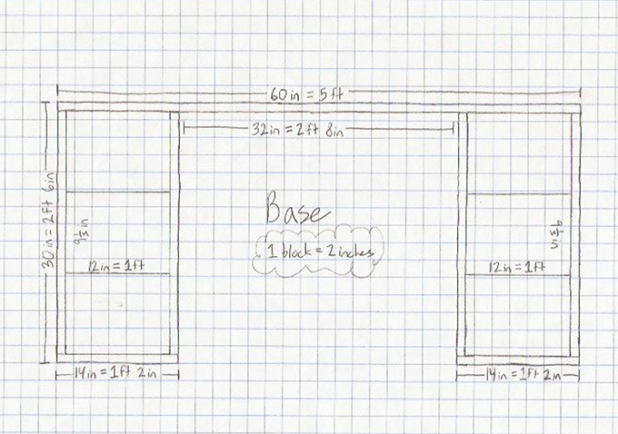
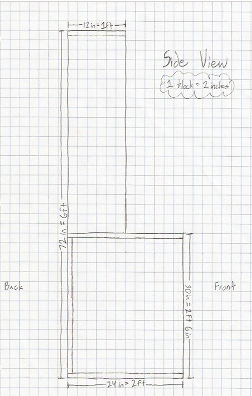
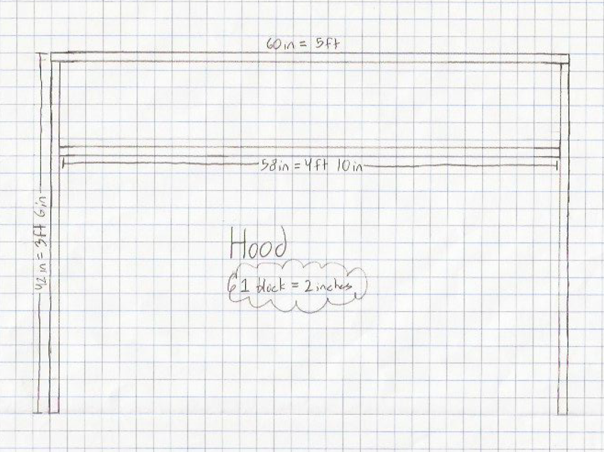
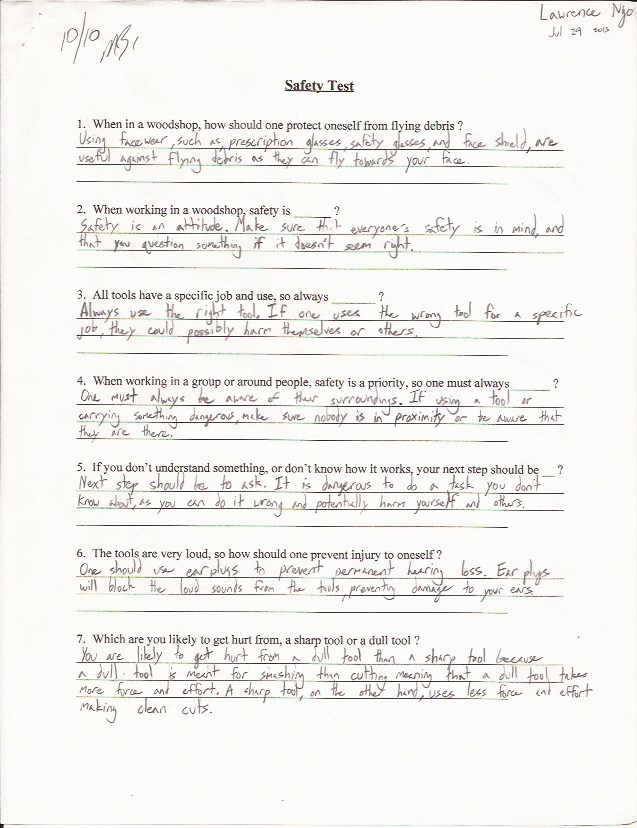
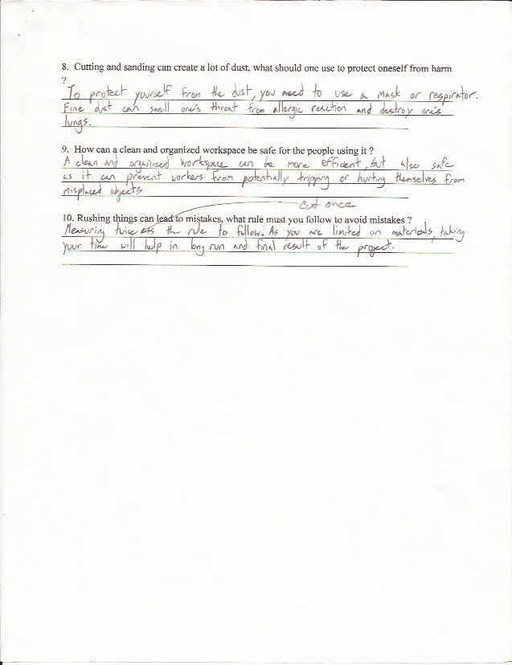
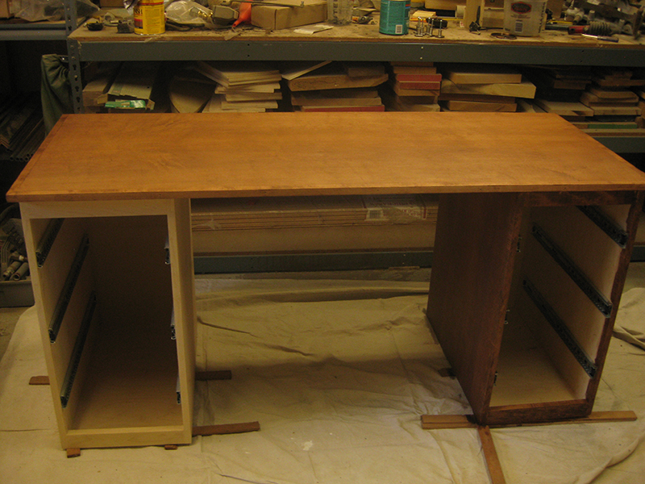
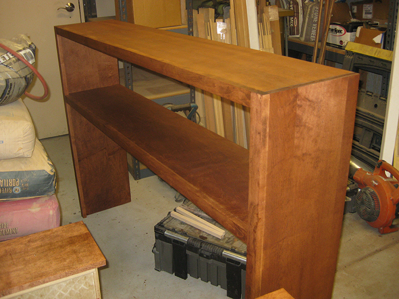
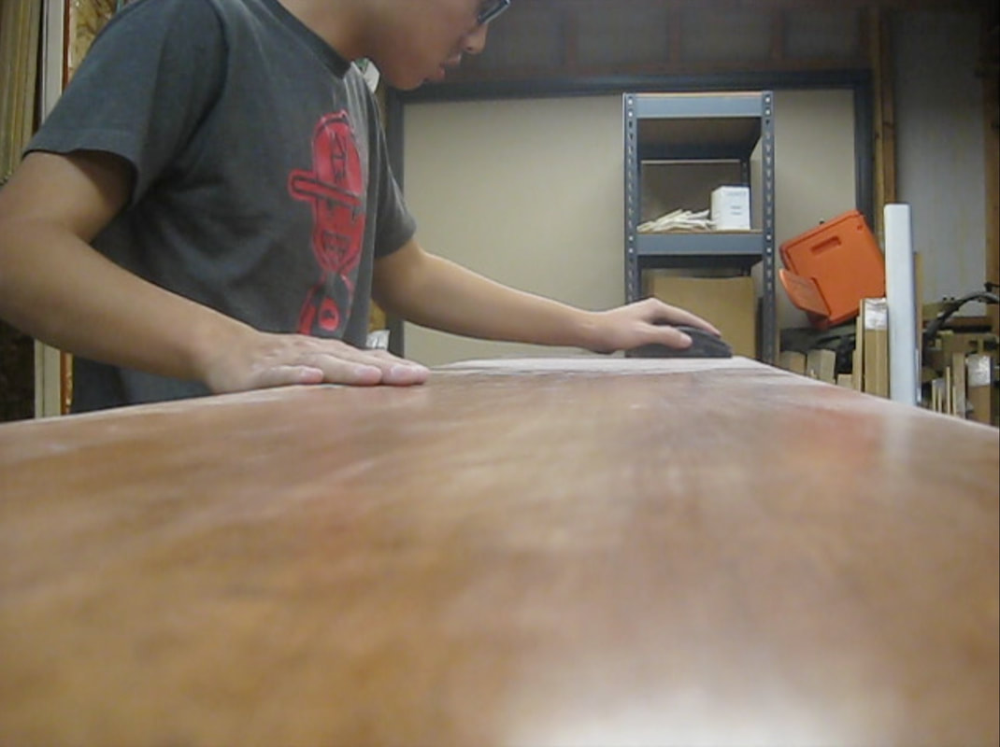
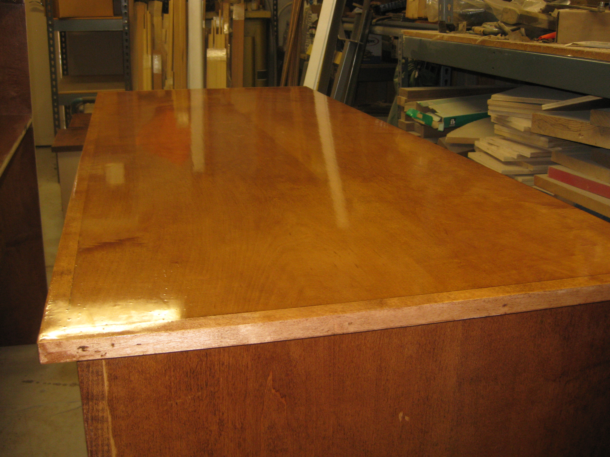
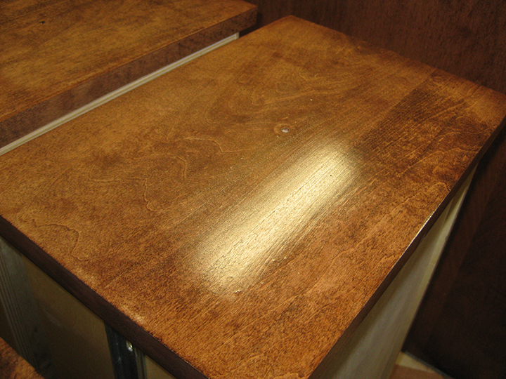

Date:
Sept. 2015 - June 2016
Hours spent:
~51 hours
Key terms:
Carpentry, Ideating, Sketching, Safety Test, Material List/Costs
At Helix Charter High School, senior projects were a mandatory assignment, in addition to interviews, that students needed to complete in order to graduate. A senior project was
basically any sort of service, program, art, or structure that required 20+ hours of work to complete and was impactful to the client. Taking advantage of the situation, I chose to
do something completely out of my comfort zone. I chose to build a custom wooden desk from scratch. I reached out to a mentor and he allowed me to use his wood shop for the whole
project. The whole project enede up taking 50+ hours spanning over half a year. I recieved a 100% on it, which was pretty rare for senior projects.
I am grateful that I did this project instead of my many other project ideas. It taught me many soft skills, such as, independence, communication, patience, and confidence, in addition
to the physical skills assocaited to woodworking.
1. Sketching / Design
Before I made the desk, I had to design it. I did some inspiration researching and used furniture in my house as references to find my ideal measurements of my desk. I sketched all
the measurements onto graph paper.



2. Mentor Safety Test
Before the physical tasks, I had to make sure I was aware of the dangers of the workshop and work safety. Thus, I completed a safety test created by my mentor, which consisted of
ten questions about tools, protection, and safety philosophy.


3. Material Inquiry
In addition, to prevent overbuying and to acknowledge what materials I would be using, I determined the materials, their cost, and eventually bought them at Strata and Home Depot
with my mentor. (Does not include all the materials used and what was given to me by my mentor, which includes nails, sand paper, etc.)
Two 3/4" x 4' x 8' B1 Hard Maple veneered plywood sheets = $140.16
35 board feet of Hard Maple wood = $117.25
1/4" x 4' x 8' Medium-Density Fiberboard (MDF) sheet = $12.29
Eight 1/2" x 8" x 5' bullnosed pre-finished Baltic Birch boards = $48.88
1/4" x 4' x 8' pre-finished Baltic Birch sheet = $16.19
6 pairs of 22" drawer slides = $24.18
6 Nickel Lindley knobs = $19.68
Quart of Minwax Pre-Stain Conditioner = $11.97
Quart of Minwax Oil-Based Red Oak Stain = $7.77
Quart of Minwax Polycrylic = $17.97
Elmers Wood Glue = $3.47
4. Parts Assembly
There were four parts in terms of assembly: the drawers, tabletop, shelf, and drawer boxes. All parts required measuring, cutting, glueing, nailing with a nail gun, clamping, applying
wood putty, and sanding with 180 and 220 grit sandpaper using a disc sander.
I first started off with the drawers, or in other words, the "legs" of the desk. In addition to the usual steps, I installed drawer slides using a consistent wood piece as an
aligned measurement jig and screwed them in.
For the tabletop, I performed the usual steps.
For the shelf, I performed the usual steps, but also crafted a Knock Down (KD) fitting, which is a corner block joint, to join the inner platform of the shelf to the rest of the shelf.
For the drawer boxes, I performed the usual steps, except I only had to sand the face frames. I also used the drill press to make the holes for where the drawer knobs would go.
Using a brush and some towel rags, I pre-stained and Red Oak stained all parts of the desk in different sessions.


9. Polyurethaning
When the stain was dry, I moved onto applying polyurethane. This part was the hardest for me because of my lack of skill in application. I had to put on 3 coats to get it perfectly coated because I kept
brushing streaks onto my finish, as well as, dust was getting on the surface. Between each coat, I had to sand the surfaces to remove the bumps and dust particles.



10. Final Assembly and Delivery
When everything was completed separately, with the help of my consultant, assembled everything together and brought it home.